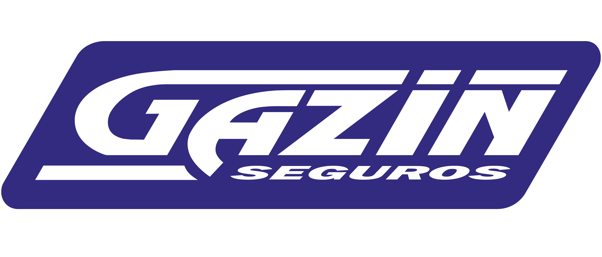

Gazin Seguros
A Gazin Seguros é uma seguradora voltada para atender as demandas dos consumidores do varejo de móveis e eletrodomésticos, com soluções que possuem total sinergia com produtos comercializados, além de outras soluções para tornar as compras uma experiência.

Quais são os tipos de seguros?
Caso tenha algum intersse em algum dos produtos oferecidos pela Gazin Seguros, saiba que existe uma grande variedade. Veja abaixo!
Seguro de Garantia Estendida Original
O seguro de garantia estendida possui como objetivo proporcionar ao cliente, facultativamente e mediante o pagamento de prêmio, a prorrogação temporal da garantia do fornecedor para produto adquirido.
Seguro Prestamista Individual
Este produto possui o objetivo de garantir a quitação ou armonização do saldo devedor do compromisso contraído pelo usuário junto à empresa credora.
Seguro Diária de Internação Hospitalar
Este produto possui o objetivo de garantir o pagamento de indenização diária fixa em caso de hospitalização do usuário.
Este seguro pode ser adicionado para momentos de doenças ou acidentes previstos e cobertos segundo o que foi acertado
na apólice.
Seguros Riscos Diversos
Este seguro possui objetivo de garantir ao cliente, mediante pagamento de prêmio, uma indenização oir prejuízos materiais devidamente comprovados.
Microsseguro de Pessoas Premiável
Este serviço possui o período de vigência curto e tem por objetivo garantir o pagamento de indenização ao segurado ou aos seus beneficiários.